Given that many of the “simple” controls look and feel so close to their Windows Forms counterparts, I won’t bother to enumerate the details of the basic widgets (Buttons, Labels, TextBoxes, etc.). Rather, let’s build a new website that illustrates working with several of the more exotic controls as well as the ASP.NET master page model and aspects of the data binding engine. Specifically, this next example will illustrate the following techniques:
To begin, create an Empty Web Site project named AspNetCarsSite. Note that we are not yet creating a new ASP.NET Web Site project, as this will add a number of starter files to the mix which we have not yet examined. For this project, we will add what we need manually.
Many websites provide a consistent look and feel across multiple pages (a common menu navigation system, common header and footer content, company logo, etc.). Under ASP.NET 1.x, developers made extensive use of s and custom web controls to define web content that was to be used across multiple pages. While s and custom web controls are still a very valid option under ASP.NET, we are also provided with master pages that complement these existing technologies.
Simply put, a master page is little more than an ASP.NET page that takes a *.master file extension. On their own, master pages are not viewable from a client-side browser (in fact, the ASP.NET runtime will not serve this flavor of web content). Rather, master pages define a common UI layout shared by all pages (or a subset of pages) in your site.
As well, a *.master page will define various content placeholder areas that establish a region of UI real estate other *.aspx files may plug into. As you will see, *.aspx files that plug their content into a master file look and feel a bit different from the *.aspx files we have been examining. Specifically, this flavor of an *.aspx file is termed a content page. Content pages are *.aspx files that do not define an HTML <form> element (that is the job of the master page).
However, as far as the end user is concerned, a request is made to a given *.aspx file. On the web server, the related *.master file and any related *.aspx content pages are blended into a single unified HTML page declaration.
To illustrate the use of master pages and content pages, begin by inserting a new master page into your website via the Website > Add New Item menu selection (Figure 33-8 shows the resulting dialog box).
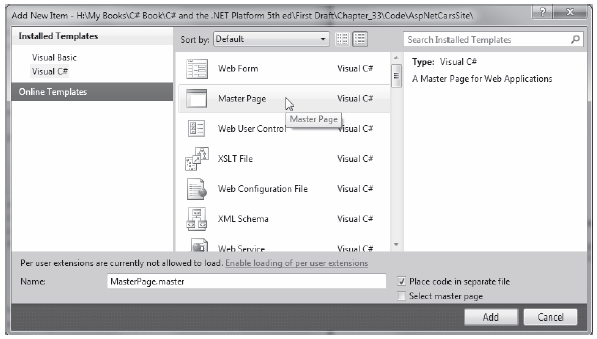Figure 33-8 Inserting a new *.master file
The initial markup of the MasterPage.master file looks like the following:
<%@ Master Language="C#" AutoEventWireup="true" CodeFile="MasterPage.master.cs" Inherits="MasterPage" %> <!DOCTYPE html PUBLIC "-//W3C//DTD XHTML 1.0 Transitional//EN" "http://www.w3.org/TR/xhtml1/DTD/xhtml1-transitional.dtd"> <html xmlns="http://www.w3.org/1999/xhtml"> <head runat="server"> <title>Untitled Page</title> <asp:ContentPlaceHolder id="head" runat="server"> </asp:ContentPlaceHolder> </head> <body> <form id="form1" runat="server"> <div> <asp:ContentPlaceHolder id="ContentPlaceHolder1" runat="server"> </asp:ContentPlaceHolder> </div> </form> </body> </html>
The first point of interest is the new <%@Master%> directive. For the most part, this directive supports the same attributes as the <%@Page%> directive described in the previous chapter. Like Page types, a master page derives from a specific base class, which in this case is MasterPage. If you were to open up your related code file, you would find the following class definition:
public partial class MasterPage : System.Web.UI.MasterPage { protected void Page_Load(object sender, EventArgs e) { } }
The other point of interest within the markup of the master is the <asp:ContentPlaceHolder> definition. This region of a master page represents the area of the master that the UI widgets of the related *.aspx content file may plug into, not the content defined by the master page itself.
If you do intend to plug in an *.aspx file within this region, the scope within the <asp:ContentPlaceHolder> and </asp:ContentPlaceHolder> tags will typically remain empty. However, if you so choose, you are able to populate this area with various web controls that function as a default UI to use in the event that a given *.aspx file in the site does not supply specific content. For this example, assume that each *.aspx page in your site will indeed supply custom content, and therefore your <asp:ContentPlaceHolder> elements will be empty.
Note A *.master page may define as many content placeholders as necessary. As well, a single *.master page may nest additional *.master pages.
You are able to build a common UI of a *.master file using the same Visual Studio 2010 designers used to build *.aspx files. For this site, you will add a descriptive Label (to serve as a common welcome message), an AdRotator control (which will randomly display one of two image files), and a TreeView control (to allow the user to navigate to other areas of the site). Here is some possible markup:
<html xmlns="http://www.w3.org/1999/xhtml"> <head runat="server"> <title>Untitled Page</title> <asp:ContentPlaceHolder id="head" runat="server"> </asp:ContentPlaceHolder> </head> <body> <form id="form1" runat="server"> <div> <hr /> <asp:Label ID="Label1" runat="server" Font-Size="XX-Large" Text="Welcome to the ASP.NET Cars Super Site!"></asp:Label> <asp:AdRotator ID="myAdRotator" runat="server"/> <br /> <br /> <asp:TreeView ID="navigationTree" runat="server"> </asp:TreeView> <hr /> </div> <div> <asp:ContentPlaceHolder id="ContentPlaceHolder1" runat="server"> </asp:ContentPlaceHolder> </div> </form> </body> </html>
Figure 33-9 shows the design time view of the current master page.
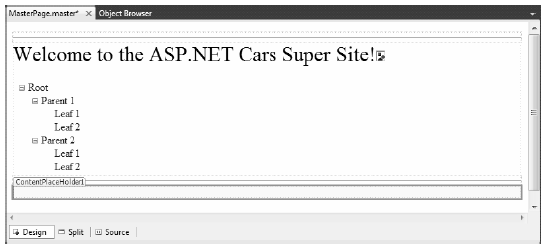Figure 33-9 The *.master file’s shared UI
Feel free to enhance the look of your TreeView control by using the inline editor of the control and selecting the Auto Format... link. For my example, I selected the Arrow theme from the resulting dialog and ended up with the following control markup:
<asp:TreeView ID="navigationTree" runat="server" ImageSet="Arrows"> <HoverNodeStyle Font-Underline="True" ForeColor="#5555DD" /> <NodeStyle Font-Names="Verdana" Font-Size="8pt" ForeColor="Black" HorizontalPadding="5px" NodeSpacing="0px" VerticalPadding="0px" /> <ParentNodeStyle Font-Bold="False" /> <SelectedNodeStyle Font-Underline="True" ForeColor="#5555DD" HorizontalPadding="0px" VerticalPadding="0px" /> </asp:TreeView>
ASP.NET ships with several web controls that allow you to handle site navigation: SiteMapPath, TreeView, and Menu. As you would expect, these web widgets can be configured in multiple ways. For example, each of these controls can dynamically generate its nodes via an external XML file (or an XML-based *.sitemap file), programmatically generate nodes in code, or through markup using the designers of Visual Studio 2010.
Your navigation system will be dynamically populated using a *.sitemap file. The benefit of this approach is that we can define the overall structure of our website in an external file and then bind it to a TreeView (or Menu) control on the fly. This way, if the navigational structure of your website changes, we simply need to modify the *.sitemap file and reload the page. To begin, insert a new Web.sitemap file into your project using the Website > Add New Item menu option to bring up the dialog box shown in Figure 33-10.
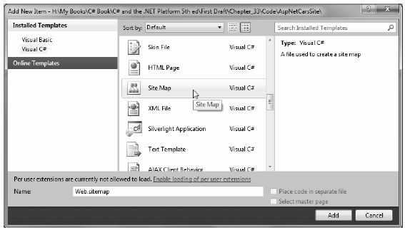Figure 33-10 Inserting a new Web.sitemap file
As you can see, the initial Web.sitemap file defines a topmost item with two subnodes:
<?xml version="1.0" encoding="utf-8" ?> <siteMap xmlns="http://schemas.microsoft.com/AspNet/SiteMap-File-1.0" > <siteMapNode url="" title="" description=""> <siteMapNode url="" title="" description="" /> <siteMapNode url="" title="" description="" /> </siteMapNode> </siteMap>
If we were to bind this structure to a Menu control, we would find a topmost menu item with two submenus. Therefore, when you wish to define subitems, simply define new <siteMapNode> elements within the scope of an existing <siteMapNode>. In any case, the goal is to define the overall structure of your website within a Web.sitemap file using various <siteMapNode> elements. Each one of these elements can define a title and URL attribute. The URL attribute represents which *.aspx file to navigate to when the user clicks a given menu item (or node of a TreeView). Your site map will contain three site map nodes (underneath the top-level site map node), as follows:
Your menu system has a single topmost Welcome item with three subelements. Therefore, you can update the Web.sitemap file as follows, but be aware that each url value must be unique (if not, you will receive a runtime error):
<Advertisements> <Ad> <ImageUrl>SlugBug.jpg</ImageUrl> <TargetUrl>http://www.Cars.com</TargetUrl> <AlternateText>Your new Car?</AlternateText> <Impressions>80</Impressions> </Ad> <Ad> <ImageUrl>car.gif</ImageUrl> <TargetUrl>http://www.CarSuperSite.com</TargetUrl> <AlternateText>Like this Car?</AlternateText> <Impressions>80</Impressions> </Ad> </Advertisements>
Note The ~/ prefix before each page in the url attribute is a notation that represents the root of the website.
Now, despite what you may be thinking, you do not associate a Web.sitemap file directly to a Menu or TreeView control using a given property. Rather, the *.master or *.aspx file that contains the UI widget that will display the Web.sitemap file must contain a SiteMapDataSource component. This type will automatically load the Web.sitemap file into its object model when the page is requested. The Menu and TreeView types then set their DataSourceID property to point to the SiteMapDataSource instance.
To add a new SiteMapDataSource to your *.master file and automatically set the DataSourceID property, you can make use of the Visual Studio 2010 designer. Activate the inline editor of the TreeView control (i.e., click the tiny arrow in the top-right corner of the TreeView) and select New Data Source, as shown in Figure 33-11.
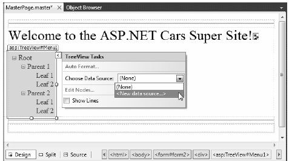Figure 33-11 Adding a new SiteMapDataSource
From the resulting dialog box, select the SiteMap icon. This will set the DataSourceID property of the Menu item as well as add a new SiteMapDataSource component to your page. This is all you need to do to configure your TreeView control to navigate to the additional pages on your site. If you wish to perform additional processing when the user selects a given menu item, you may do so by handling the SelectedNodeChanged event. There is no need to do so for this example, but be aware that you are able to determine which menu item was selected using the incoming event arguments.
Before moving on to the AdRotator control, add a SiteMapPath type (located in the Navigation tab in the toolbox) onto your *.master file, beneath the content placeholder element. This widget will automatically adjust its content based on the current selection of the menu system. As you may know, this can provide a helpful visual cue for the end user (formally, this UI technique is termed breadcrumbs). Once you complete this example, you will notice that when you select the Welcome > Build a Car menu item, the SiteMapPath widget updates accordingly automatically.
The role of the ASP.NET AdRotator widget is to randomly display a given image at some position in the browser. Go ahead and add an AdRotator widget to the designer. Once you do, it is displayed as an empty placeholder. Functionally, this control cannot do its magic until you assign the AdvertisementFile property to point to the source file that describes each image. For this example, the data source will be a simple XML file named Ads.xml.
To add the XML file to the Web site, go to the Website > Add New Item menu option and select XML file. Name the file Ads.xml and specify a unique <Ad> element for each image you wish to display. At minimum, each <Ad> element specifies the image to display (ImageUrl), the URL to navigate to if the image is selected (TargetUrl), mouseover text (AlternateText), and the weight of the ad (Impressions):
<Advertisements> <Ad> <ImageUrl>SlugBug.jpg</ImageUrl> <TargetUrl>http://www.Cars.com</TargetUrl> <AlternateText>Your new Car?</AlternateText> <Impressions>80</Impressions> </Ad> <Ad> <ImageUrl>car.gif</ImageUrl> <TargetUrl>http://www.CarSuperSite.com</TargetUrl> <AlternateText>Like this Car?</AlternateText> <Impressions>80</Impressions> </Ad> </Advertisements>
Here you have specified two image files (car.gif and slugbug.jpg). As a result, you will need to ensure that these files are in the root of your website (these files have been included with this book’s code download). To add them to your current project, select the Website > Add Existing Item menu option. At this point, you can associate your XML file to the AdRotator control via the AdvertisementFile property (in the Properties window):
<asp:AdRotator ID="myAdRotator" runat="server" AdvertisementFile="~/Ads.xml"/>
Later when you run this application and post back to the page, you will be randomly presented with one of two image files.
Now that you have a master page established, you can begin designing the individual *.aspx pages that will define the UI content to merge within the <asp:ContentPlaceHolder> tag of the master page. The *.aspx files that are merged within a master page are called content pages and have a few key differences from a normal, standalone ASP.NET web page.
In a nutshell, the *.master file defines the <form> section of the final HTML page. Therefore, the existing <form> area within the *.aspx file will need to be replaced with an <asp:Content> scope. While you could update the markup of your initial *.aspx file by hand, you can insert a new content page to your project; simply right-click anywhere on the designer surface of the *.master file and select the Add Content Page menu option. This will generate a new *.aspx file with the following initial markup:
<%@ Page Language="C#" MasterPageFile="~/MasterPage.master" AutoEventWireup="true" CodeFile="Default.aspx.cs" Inherits="_Default" Title="Untitled Page" %> <asp:Content ID="Content1" ContentPlaceHolderID="head" Runat="Server"> </asp:Content> <asp:Content ID="Content2" ContentPlaceHolderID="ContentPlaceHolder1" Runat="Server"> </asp:Content>
First, notice that the <%@Page%> directive has been updated with a new MasterPageFile attribute that is assigned to your *.master file. Also note that rather than having a <form> element, we have an <asp:Content> scope (currently empty) that has set the ContentPlaceHolderID value identical to the <asp:ContentPlaceHolder> component in the master file.
Given these associations, the content page understands where to plug in its content, while the master’s content is displayed in a read-only nature on the content page. There is no need to build a complex UI for your Default.aspx content area. For this example, simply add some literal text that provides some basic site instructions, as you see in Figure 33-12 (also notice on the upper right of the content page that there is a link to switch to the related master file).
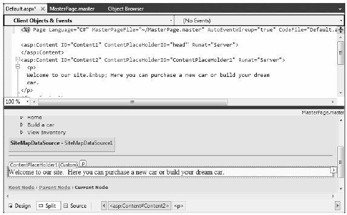Figure 33-12 Authoring the first content page
Now, if you run your project, you will find that the UI content of the *.master and Default.aspx files have been merged into a single stream of HTML. As you can see from Figure 33-13, the end user is unaware that the master page even exists. Also, as you refresh the page (via the F5 key), you should see the AdRotator randomly displaying one of two images.
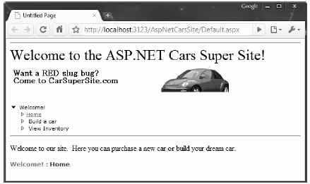Figure 33-13 At runtime, master files and content pages render back a single form
Note Do be aware that a Page object’s master page can be assigned programmatically within the PreInit event of a Page derived type using the inherited Master property.
To insert the Inventory.aspx content page into your current project, open the *.master page in the IDE, select Website > Add Content Page, and rename this file to Inventory.aspx. The role of the Inventory content page is to display the contents of the Inventory table of the AutoLot database within a GridView control.
The ASP.NET GridView control has the ability to represent connection string data and SQL Select, Insert, Update, and Delete statements (or alternatively stored procedures) in markup. Therefore, rather than authoring all of the necessary ADO.NET code by hand, you can allow the SqlDataSource class to generate the markup for you. Using the visual designers, you are able to assign the DataSourceID property of the GridView to the SqlDataSource component.
With a few simple mouse clicks, you can configure the GridView to automatically select, update, and delete records of the underlying data store. While this zero-code mindset greatly simplifies the amount of boilerplate code, understand that this simplicity comes with a loss of control and may not be the best approach for an enterprise-level application. This model can be wonderful for low-trafficked pages, prototyping a website, or smaller in-house applications.
To illustrate how to work with the GridView (and the data access logic) in a declarative manner, begin by updating the Inventory.aspx content page with a descriptive Label control. Next, open the Server Explorer tool (via the View menu) and make sure you have added a data connection to the AutoLot database created during your examination of ADO.NET (see Chapter 21 for a walkthrough of the process of adding a data connection). Now, select the Inventory table in Server Explorer and drag it onto the content area of the Inventory.aspx file. Once you have done so, the IDE responds by performing the following steps:
Note As an alternative, you can configure a GridView widget using the inline editor. Select New Data Source from the Choose Data Source drop-down box. This will activate a wizard that walks you through a series of steps to connect this component to the required data source.
If you examine the opening declaration of the GridView control, you will see that the DataSourceID property has been set to the SqlDataSource you just defined:
<asp:GridView ID="GridView1" runat="server" AutoGenerateColumns="False" DataKeyNames="CarID" DataSourceID="SqlDataSource1" EmptyDataText="There are no data records to display."> <Columns> <asp:BoundField DataField="CarID" HeaderText="CarID" ReadOnly="True" SortExpression="CarID" /> <asp:BoundField DataField="Make" HeaderText="Make" SortExpression="Make" /> <asp:BoundField DataField="Color" HeaderText="Color" SortExpression="Color" /> <asp:BoundField DataField="PetName" HeaderText="PetName" SortExpression="PetName" /> </Columns> </asp:GridView>
The SqlDataSource type is where a majority of the action is taking place. In the markup that follows, notice that this type has recorded the necessary SQL statements (with parameterized queries, no less) to interact with the Inventory table of the AutoLot database. As well, using the $ syntax of the ConnectionString property, this component will automatically read the <connectionStrings> value from web.config:
<asp:SqlDataSource ID="SqlDataSource1" runat="server" ConnectionString="<%$ ConnectionStrings:AutoLotConnectionString1 %>" DeleteCommand="DELETE FROM [Inventory] WHERE [CarID] = @CarID" InsertCommand="INSERT INTO [Inventory] ([CarID], [Make], [Color], [PetName]) VALUES (@CarID, @Make, @Color, @PetName)" ProviderName="<%$ ConnectionStrings:AutoLotConnectionString1.ProviderName %>" SelectCommand="SELECT [CarID], [Make], [Color], [PetName] FROM [Inventory]" UpdateCommand="UPDATE [Inventory] SET [Make] = @Make, [Color] = @Color, [PetName] = @PetName WHERE [CarID] = @CarID"> <DeleteParameters> <asp:Parameter Name="CarID" Type="Int32" /> </DeleteParameters> <UpdateParameters> <asp:Parameter Name="Make" Type="String" /> <asp:Parameter Name="Color" Type="String" /> <asp:Parameter Name="PetName" Type="String" /> <asp:Parameter Name="CarID" Type="Int32" /> </UpdateParameters> <InsertParameters> <asp:Parameter Name="CarID" Type="Int32" /> <asp:Parameter Name="Make" Type="String" /> <asp:Parameter Name="Color" Type="String" /> <asp:Parameter Name="PetName" Type="String" /> </InsertParameters> </asp:SqlDataSource>
At this point, you are able to run your web program, click the View Inventory menu item, and view your data, as shown in Figure 33-14. (Note that I updated my DataView grid with a unique look and feel using the inline designer.)
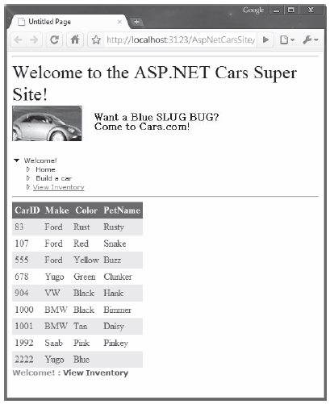Figure 33-14 The zero-code model of the SqlDataSource component
The GridView control can easily be configured for sorting (via column name hyperlinks) and paging (via numeric or next/previous hyperlinks). To do so, activate the inline editor and check the appropriate options, as shown in Figure 33-15.
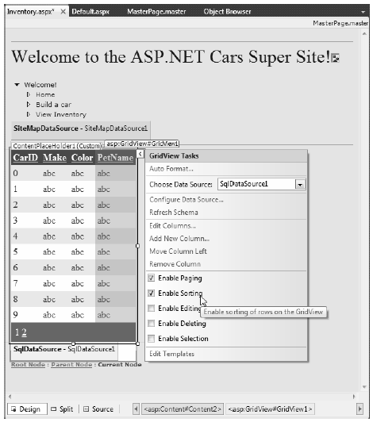Figure 33-15 Enabling sorting and paging
When you run your page again, you will be able to sort your data by clicking the column names and scrolling through your data via the paging links (provided you have enough records in the Inventory table!).
The final detail of this page is to enable the GridView control’s support for in-place activation. Given that your SqlDataSource already has the necessary Delete and Update logic, all you need to do is check the Enable Deleting and Enable Editing check boxes of the GridView (see Figure 33-15 for a reference point). Sure enough, when you navigate back to the Inventory.aspx page, you are able to edit and delete records (as shown in Figure 33-16) and update the underlying Inventory table of the AutoLot database.
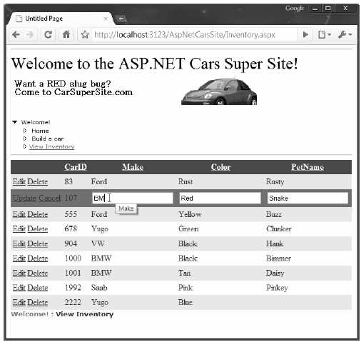Figure 33-16 Editing and deleting functionality
Note Editing and deleting functionality
Note Enabling in-place editing for a GridView requires that the database table be assigned a primary key. If you do not see these options enabled, chances are you forgot to set CarID as the primary key of the Inventory table within the AutoLot database.
The final task for this example is to design the BuildCar.aspx content page. Insert this file into the current project (via the Website > Add Content Page menu option). This new page will make use of the ASP.NET Wizard web control, which provides a simple way to walk the end user through a series of related steps. Here, the steps in question will simulate the act of building an automobile for purchase.
Place a descriptive Label and Wizard control onto the content area. Next, activate the inline editor for the Wizard and click the Add/Remove WizardSteps link. Add a total of four steps, as shown in Figure 33-17.
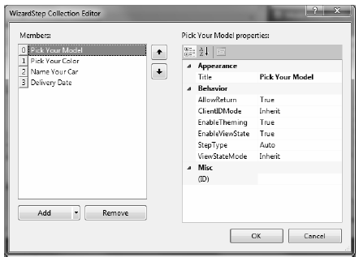Figure 33-17 Configuring our wizard
Once you have defined these steps, you will notice that the Wizard defines an empty content area where you can now drag and drop controls for the currently selected step. For this example, update each step with the following UI elements (be sure to provide a fitting ID value for each item using the Properties window):
The ListBox control is the only UI element of the Wizard that requires additional steps. Select this item on the designer (making sure you first select the Pick Your Color link) and fill this widget with a set of colors using the Items property of the Properties window. Once you do, you will find markup much like the following within the scope of the Wizard definition:
<asp:ListBox ID="ListBoxColors" runat="server" Width="237px"> <asp:ListItem>Purple</asp:ListItem> <asp:ListItem>Green</asp:ListItem> <asp:ListItem>Red</asp:ListItem> <asp:ListItem>Yellow</asp:ListItem> <asp:ListItem>Pea Soup Green</asp:ListItem> <asp:ListItem>Black</asp:ListItem> <asp:ListItem>Lime Green</asp:ListItem> </asp:ListBox>
Now that you have defined each of the steps, you can handle the FinishButtonClick event for the autogenerated Finish button. Be aware, however, that you won’t see this Finish button until you select the final step of the wizard on the designer. Once you have selected the final step, simply double click on the Finish button to generate the event handler. Within the server-side event handler, obtain the selections from each UI element and build a description string that is assigned to the Text property of an additional Label type named lblOrder:
public partial class Default2 : System.Web.UI.Page { protected void Page_Load(object sender, EventArgs e) { } protected void carWizard_FinishButtonClick(object sender, System.Web.UI.WebControls.WizardNavigationEventArgs e) { // Get each value. string order = string.Format("{0}, your {1} {2} will arrive on {3}.", txtCarPetName.Text, ListBoxColors.SelectedValue, txtCarModel.Text, carCalendar.SelectedDate.ToShortDateString()); // Assign to label lblOrder.Text = order; } }
At this point, your AspNetCarsSite web application is complete! Figure 33-18 shows the Wizard in action.
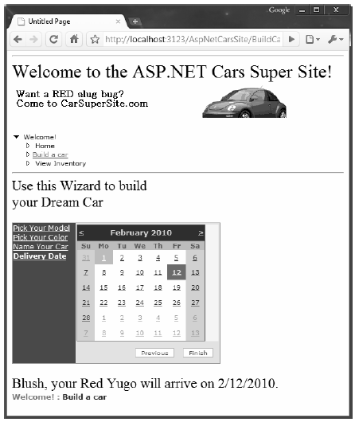Figure 33-18 The Wizard control in action
That wraps up your first look of various ASP.NET web controls, master pages, content pages and site map navigation. Next up, let’s look at the functionality of the ASP.NET validation controls.